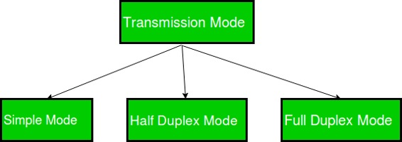

Transmission mode means transferring of data between two devices. It is also known as communication mode. Buses and networks are designed to allow communication to occur between individual devices that are interconnected. There are three types of transmission mode:-

Simplex Mode
In Simplex mode, the communication is unidirectional, as on a one-way street. Only one of the two devices on a link can transmit, the other can only receive. The simplex mode can use the entire capacity of the channel to send data in one direction.
Example: Keyboard and traditional monitors. The keyboard can only introduce input, the monitor can only give the output.

Half-Duplex Mode
In half-duplex mode, each station can both transmit and receive, but not at the same time. When one device is sending, the other can only receive, and vice versa. The half-duplex mode is used in cases where there is no need for communication in both direction at the same time. The entire capacity of the channel can be utilized for each direction.
Example: Walkie- talkie in which message is sent one at a time and messages are sent in both the directions.

Full-Duplex Mode
In full-duplex mode, both stations can transmit and receive simultaneously. In full_duplex mode, signals going in one direction share the capacity of the link with signals going in other direction, this sharing can occur in two ways:
Full-duplex mode is used when communication in both direction is required all the time. The capacity of the channel, however must be divided between the two directions.
Example: Telephone Network in which there is communication between two persons by a telephone line, through which both can talk and listen at the same time.

References- Data Communication and Network,5th Edition,Behrouz A.Forouzan.